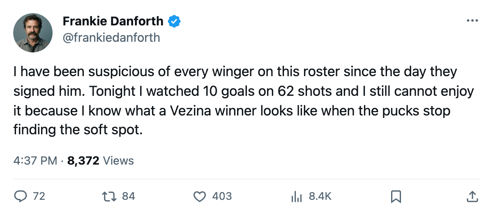
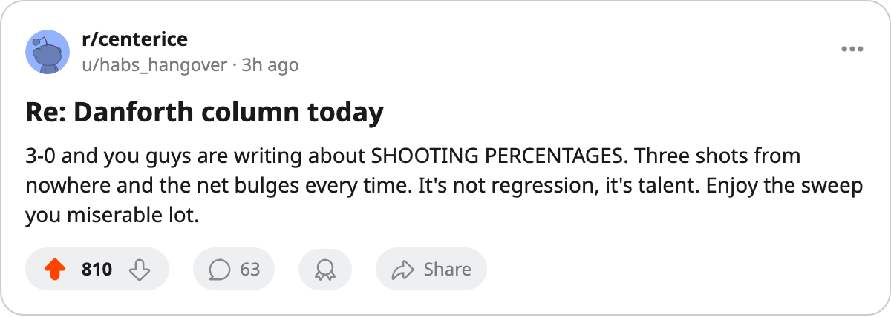

NYI
NYIDANFORTH: 10 goals on 62 shots, and I have been waiting for this number to come due since October
The Maple Leafs are shooting at a rate no team sustains past a first round. Washington's goaltender won the Vezina last season.
 Frankie DanforthColumnist · Queen City Telegram
Frankie DanforthColumnist · Queen City Telegram
Code Green

The piece
Ten goals on 62 shots across 3 games. That is the Toronto offense right now, a rate that no team I have watched in 26 Octobers carries into a second round. It is not luck.  Marian Gaborik98 scored 55 goals in the regular season, the best in the league, and he has 7 points in 3 games this spring.
Marian Gaborik98 scored 55 goals in the regular season, the best in the league, and he has 7 points in 3 games this spring.  Mats Sundin91 has 4.
Mats Sundin91 has 4.  Gary Roberts88 has 6.
Gary Roberts88 has 6.
But 3 goals on 114 shots from the other side tells me the goaltending is carrying two parts of this series, and goaltending does not travel as reliably as scoring talent.
I have been saying since October that this roster needs a second centre behind Sundin who can produce when the wingers cool off. The trade deadline passed on 2005-03-19 with no call placed. A 19-year-old from  Toronto Maple Leafs's own development system walked in and scored 33 goals at $2.34M. Petr Chlup86 has answered the question with his season and not a single playoff point in 3 games. The second line has been silent all series, and the wingers have carried 10 of the 13 total goals between them and Sundin.
Toronto Maple Leafs's own development system walked in and scored 33 goals at $2.34M. Petr Chlup86 has answered the question with his season and not a single playoff point in 3 games. The second line has been silent all series, and the wingers have carried 10 of the 13 total goals between them and Sundin.
The  Washington Capitals Capitals sit at 2-0 in their series tonight and look likely to be the next opponent. They scored 287 goals this season. Their goaltender,
Washington Capitals Capitals sit at 2-0 in their series tonight and look likely to be the next opponent. They scored 287 goals this season. Their goaltender,  Olaf Kolzig87, won the Vezina last spring. He is not
Olaf Kolzig87, won the Vezina last spring. He is not  Rick DiPietro84.
Rick DiPietro84.
The fourth line question
 Jason Spezza72 carries the 4th centre slot at 15 points in 46 games and 6.7 minutes a night.
Jason Spezza72 carries the 4th centre slot at 15 points in 46 games and 6.7 minutes a night.  Ramzi Abid81 has 66 points on $0.40M, but he plays 13.8 minutes a night and the coaching staff has him on the 3rd wing. When the top line goes quiet for a 20-minute stretch in a 7-game series, who carries the minutes?
Ramzi Abid81 has 66 points on $0.40M, but he plays 13.8 minutes a night and the coaching staff has him on the 3rd wing. When the top line goes quiet for a 20-minute stretch in a 7-game series, who carries the minutes?
Nobody. A second line that has produced 0 points in 3 playoff games, a 38-year-old forward out with a concussion until 2005-04-15, and a goaltender making $6.50M a year who has not dressed in 3 games.
The Toronto Maple Leafs Maple Leafs are one win from a sweep, and I will take it. I will not stop checking the shooting rate in my head every period. Sixteen percent is a flame on the Bureau's Development Index, and those decay in May.
[[widget:panic|level=2|label=Code Green]]

